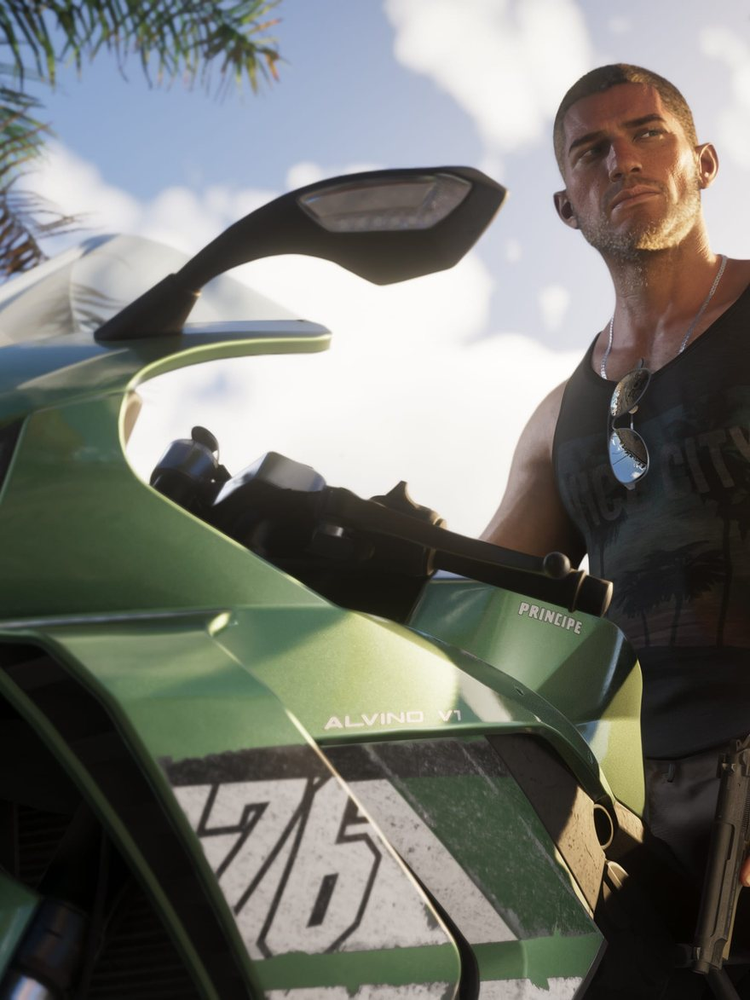
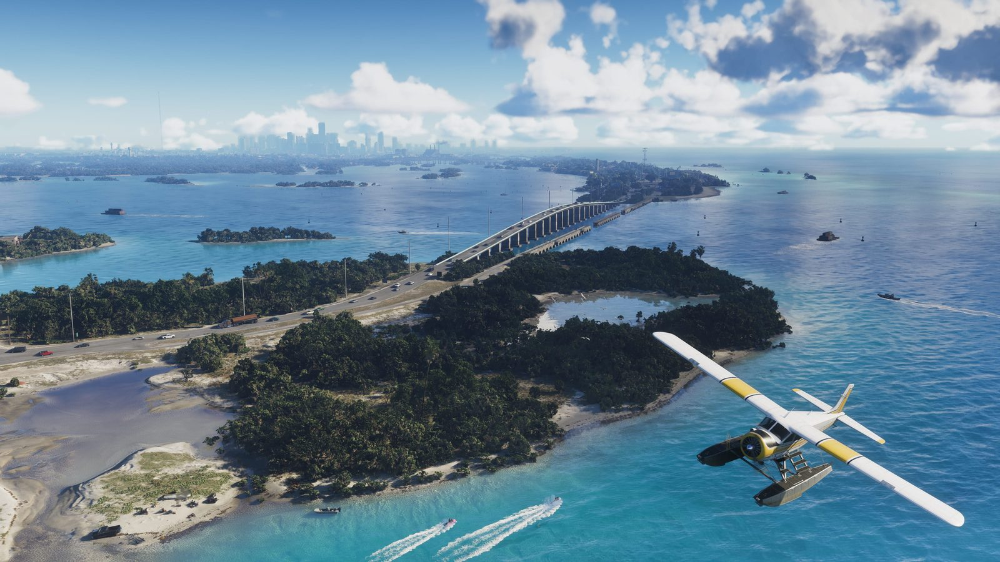
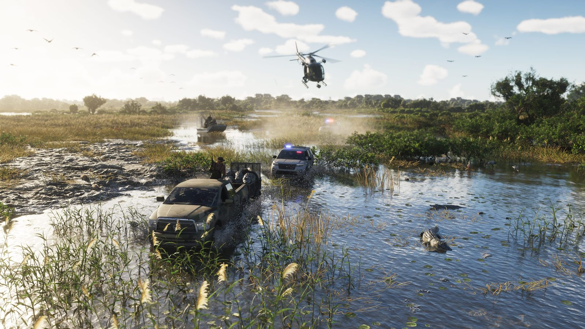
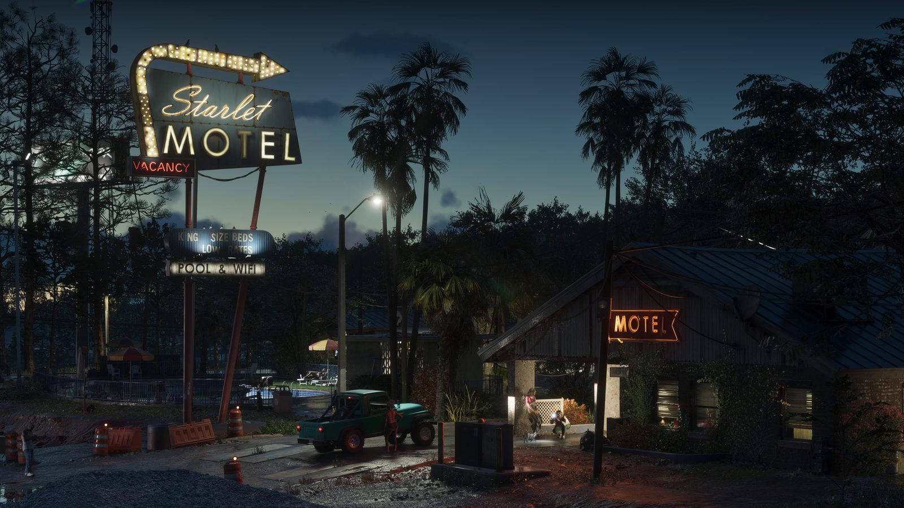
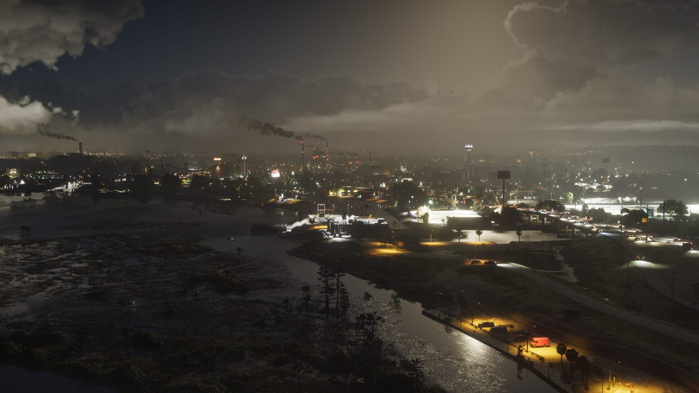
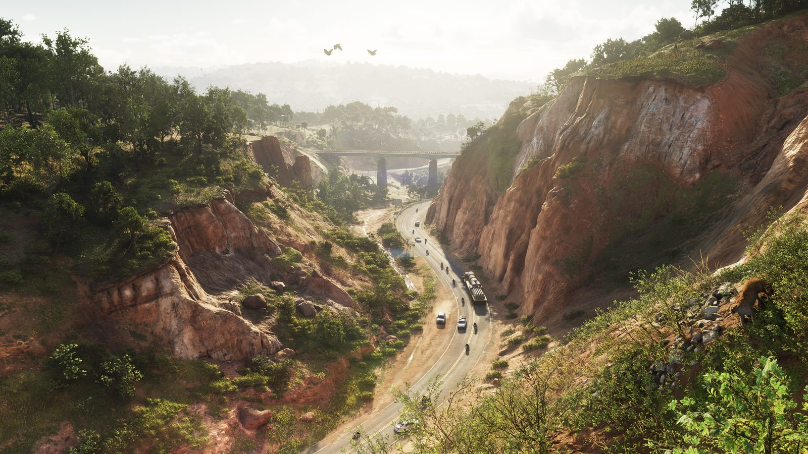
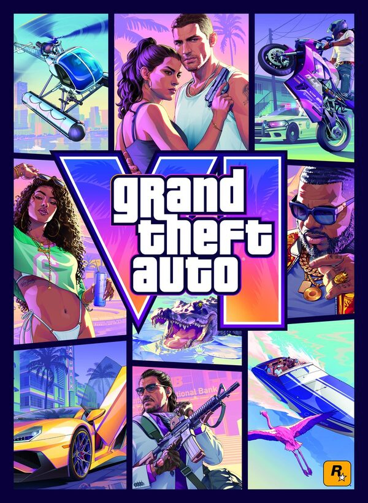

Cal Hampton
Amigo de Jason · socio de Brian
A salvo en casa, con unas cervezas, escuchando comunicaciones de la Guardia Costera y demasiadas pestañas abiertas. «¿Y si todo lo de internet fuera verdad?».
Ya a la venta · Guía no oficial actualizada el 27 de noviembre de 2026
Trece años de espera, un estado entero y dos fugitivos. Aquí tienes la historia sin spoilers, los rostros y las regiones de la Florida de Rockstar, los sistemas que de verdad cambian la partida y la checklist completa para cerrar el juego.
01 Historia
Rockstar no cuenta la historia de un criminal que conquista una ciudad. Cuenta la de una pareja que intenta salir de una mala racha y se mete en otra mucho peor. Todo lo demás —el dinero, los atracos, la policía— gira alrededor de eso.
«Jason y Lucía siempre han sabido que las cartas estaban en su contra, pero cuando un golpe que parecía fácil sale mal, se ven atrapados en el lado más oscuro del lugar más soleado de América».
Ese golpe fallido es el motor de todo: una conspiración criminal que cruza el estado de Leónida y empuja a la pareja a depender el uno del otro. El juego se toma su tiempo en construir esa relación, y esa es la diferencia con GTA V. Aquí no saltas entre tres desconocidos con agendas propias: juegas a dos personas que comparten coche, casa, deudas y consecuencias.
La campaña se organiza en un prólogo y cinco capítulos, con 91 misiones repartidas en 22, 11, 26, 25 y 7 encargos. Puedes cambiar entre Jason y Lucía casi en cualquier momento, pero algunas misiones son exclusivas de uno de los dos, y hacer trabajos juntos alimenta su relación.
El dinero pesa más que nunca: hay tramos del guion que exigen reunir una cantidad concreta antes de continuar. La historia no te espera con la cartera llena, así que los atracos secundarios no son un extra, son parte del ritmo.
No hay repetición de misiones y cada capítulo tiene un punto de no retorno. Haz una partida guardada manual antes de cada transición grande y no dejes recados con reloj encima de la mesa: las misiones opcionales con forma de reloj de arena se pueden perder.
El punto más delicado es Tourist Trap, en el capítulo 1: pierdes la casa de Jason, sus vehículos y todo el efectivo salvo 5.000 $ que quedan en la cuenta familiar. Vacía la caja fuerte y guarda antes de entrar.
02 El reparto
Alrededor de la pareja, Rockstar presentó seis perfiles oficiales: la red de socios, jefes y estrellas que sostiene (y aprieta) su historia.
Amigo de Jason · socio de Brian
A salvo en casa, con unas cervezas, escuchando comunicaciones de la Guardia Costera y demasiadas pestañas abiertas. «¿Y si todo lo de internet fuera verdad?».
Traficante de los Cayos
Veterano de la época dorada del contrabando. Deja vivir a Jason gratis en una de sus propiedades a cambio de palizas locales y de pasarse a por la sangría de Lori.
Leyenda de Vice City
Convirtió la calle en un imperio legal: inmuebles, un club de striptease y un estudio. Sonríe hasta que toca hablar de negocios. «El dinero del club paga el estudio, y el de la droga lo paga todo».
Only Raw Records
Más estafador que gángster. Firmó a Real Dimez y ahora quiere comerse la escena de Vice City. Las bailarinas son sus A&R: si el disco pega, los DJ lo pinchan.
Bae-Luxe & Roxy · dúo de rap
Amigas desde el instituto, convertidas en máquina de vídeos virales y letras picantes. Un hit con DWNPLY las puso en el mapa; ahora buscan que caiga el segundo.
Atracador de bancos
Confianza, encanto y mala cabeza. Busca talento dispuesto a arriesgar por los botines grandes. «Un profesional se adapta», dice. Su temeridad sube la apuesta en cada golpe.
Voces: Dylan Rourke pone voz a Jason y Manni L. Perez a Lucía. El reparto completo aparece en los créditos del juego; Stephen Root está acreditado como Brian Heder.
03 Jason y Lucía
Todo lo que el menú de pausa guarda y el juego no te explica: qué clase de criminales son, cuánto se quieren y en qué se traduce entrenar. Tres sistemas independientes que conviene mirar antes de la misión veinte.

Jugable · exmilitar
«Si pasa algo, voy justo detrás de ti.»
Criado entre estafadores, pasó por el Ejército y acabó en los Cayos haciendo de todo para los traficantes de Brian. Quiere una vida tranquila y lleva toda la vida rodeado de gente que se la complica.
Jugable · recién salida
«Lo único que importa es a quién conoces y qué tienes.»
Su padre le enseñó a pelear en cuanto aprendió a andar. Defender a su familia la llevó a la penitenciaría de Leónida y la suerte la sacó. Quiere la vida que su madre soñó desde Liberty City, pero sin esperar a que se la den.
04 El mapa
Leónida es la Florida de Rockstar: un estado con la costa este al Atlántico, el golfo al oeste y una cadena de cayos al sur. Estas son las seis regiones que el estudio nombró oficialmente, con lo que aporta cada una.
Mapa interactivo
Arrastra, acerca y toca cada punto para ver qué hay. El mapa es el póster oficial de Leónida publicado por Rockstar Games; los pines y las fichas son nuestros.
Mapa oficial © Rockstar Games · web oficial
Vice-Dale · sureste
El glamur, el hustle y la codicia de América en una sola ciudad. Ocean Beach y South Beach para el postureo, Downtown para los rascacielos, Little Cuba para comer, Stockyard para los murales y el puerto para lo que no se declara.

Mariana · sur
El archipiélago donde empieza todo: «no es lujoso, pero es fácil». Aquí vive Jason, aquí está el astillero de Brian y aquí se aprende que el agua bonita también esconde tiburones.

Mariana · interior
La llanura primigenia: manglares, agua marrón, caimanes y descubrimientos más raros que peligrosos. Los airboats son una clase de vehículo propia porque aquí no sirve nada más.

Kelly · costa oeste
El antiguo destino de vacaciones que se quedó sin verano: moteles baratos, atracciones cerradas, centros comerciales vacíos y un puerto que sigue trabajando. La cara B del sueño de Leónida.

Interior · centro
El corazón industrial: la refinería de Allied Crystal da trabajo al pueblo, una banda de moteros lo condiciona y los campos de caña arden cuando toca. Dinero de fábrica, deudas de família.

Lummox · norte
Parque nacional en la frontera norte: bosques, colinas, caza, pesca y rutas todoterreno. El único sitio de Leónida donde el silencio no es sospechoso.
05 Cómo se juega
GTA VI no cambia solo el mapa: cambia cómo te persigue la policía, cómo consigues dinero y cómo entras y sales de un edificio. Estos son los sistemas que tienes que entender antes de la misión veinte.
El nivel de búsqueda vuelve a seis estrellas, pero lo importante es lo que la policía sabe de ti. Las estrellas huecas significan que hay un delito denunciado sin descripción; las rojas, que te has escapado pero sigues dentro de la zona de búsqueda.
Cambia de coche, de ropa o sepárate de Lucía. El Heat recuerda tu aspecto, tus gafas y tu vehículo.
Un registro a largo plazo de cómo te comportas, con la lógica del honor de Red Dead Redemption 2: la violencia que pide una misión no cuenta igual que el caos gratuito. No desaparece al perder a la policía.
Cualquier tienda de Leónida se puede robar. Puedes abrir con ganzúa, reventar la cámara para que no quede grabación o volar la caja fuerte y llevarte menos. Lo que no hagas bien lo acabas pagando en Heat.
No compras coches: los robas y los registras. La app WAINK escanea el vehículo antes del golpe y te dice valor, cerradura, alarma y si lleva rastreador. Los antiguos se abren con una pletina; los de lujo piden clonar la llave.
Llevas encima dos armas cortas y dos largas; el resto vive en el maletero de tu vehículo personal. Puedes herir sin matar, disparar el arma de la mano o dejar inconsciente a alguien.
Si te matan o te detienen, el efectivo que llevas encima se va. Ingresa en los cajeros a la cuenta conjunta de la pareja. Lo robado —joyas, billetes marcados, droga— pasa antes por un perista.
Además: gimnasio, baloncesto, billar, minigolf, recreativas, drones, caza, pesca, carreras y una app de citas. La mayoría alimenta el 100%.
06 Primeras horas
El arranque es más lento y más instructivo de lo que parece. Estas seis decisiones te ahorran horas y algún que otro cabreo.
La primera cadena de misiones —Gone Fishing, Gear Up, Just A Scratch, Lab Fees— es el tutorial real. Domina la conducción, el sigilo y el cambio de personaje antes de tocar dinero grande.
No hay repetición de misiones ni vuelta atrás. Una partida manual en cada transición es el seguro más barato del juego.
Todo lo que llevas encima se pierde al morir o al ser detenido. Pasa por un cajero antes de una misión caliente y deja en la cuenta solo lo que necesites para munición y ropa.
Un atraco limpio vale más que tres sucios. Estudia la tienda, mira si hay cámara, decide cómo abrir la caja y sal sin que te vean la cara. El Heat se paga luego.
Las casas de empeño abren tras Coffee Break (cap. 2); los golpes a bancos y los préstamos, tras Credit Check (cap. 3); las joyerías, tras los encargos de Yasmani. Son la base del dinero secundario.
Las misiones opcionales con temporizador se pierden al avanzar la historia. Si ves una que te interesa, hazla antes de la siguiente misión principal.
07 Campaña
Las 91 misiones principales en orden, más los tres encargos que no todas las guías cuentan. Qué se hace en cada una, qué decisiones admite y qué consecuencias tienen, sin huecos ni ramas inventadas.
Aviso de spoilers. Los títulos, resúmenes y decisiones revelan giros de la trama. El nombre de la última misión queda oculto hasta que lo pidas. Despliega «Decisiones» en cada misión para ver opciones y consecuencias; las marcadas como lineales no cambian el resultado.
08 Extraños y locos
Las 16 cadenas que viven fuera de la historia principal, con sus 51 misiones en orden: dónde empieza cada una, qué hay que hacer, quién puede jugarla y qué se pierde para siempre. Las actividades, carreras y coleccionables siguen en la checklist del 100%.
Antes de empezar. No hay repetición de misiones: guarda una partida manual antes de cada cierre. Las cadenas de Shirley y la carrera de Yago llevan reloj y pueden desaparecer; el resto sigue disponible después de los créditos. Si un icono no arranca, cambia de protagonista o vuelve de noche.
Treinta y tres extras que no siempre aparecen en la lista de Extraños y Locos: empiezan con un cartel, una llamada o un encuentro nocturno. No todos cuentan para el trofeo, pero varios dan mejoras permanentes.
| Encargo | Cómo empieza | Qué hay que hacer | Recompensa |
|---|
09 Economía
La historia te pide capital y los peristas te piden volumen. Estas son las rutas que sostienen la economía, de menos a más riesgo.
| Ruta | Riesgo | Qué necesita | Para qué sirve |
|---|---|---|---|
| Atracos a tiendas | Bajo | Una máscara y paciencia | Efectivo rápido y 50 de los 91 del 100% |
| Cristalazos y joyerías | Medio | Capital inicial y rutas de escape | Joyas para perista y 34/35 del checklist |
| Operaciones de bandas | Medio | Armamento y un plan de salida | Droga, dinero y 39/39 obligatorias |
| Préstamos con usura | Alto | Hablar con Raul y aguantar presión | Billetes marcados y 7/7 obligatorios |
| Golpes a bancos | Alto | Equipo, vehículos y cap. 3 | Los mayores botines y las 8 bóvedas |
Los vehículos dañados valen menos: roba, repara si puedes y vende entero. Los rastreadores GPS avisan a la policía si no los anulas.
10 100%
El panel del juego (Progreso → Estadísticas → 100%) aparece al terminar la historia y es la fuente definitiva. Esta es la misma lista, con casillas que se guardan en tu navegador.
requisitos completados
Las cifras siguen las guías publicadas en la semana de lanzamiento; el contador del juego manda si hay alguna diferencia de una unidad.
11 Comprar
La Ultimate no desbloquea más historia: añade objetos, tiendas y dos encargos que aparecen a lo largo de la campaña. Si dudas, empieza por la estándar y amplía después.
Digital o código en caja
79,99 € / 79,99 $
Solo digital
99,99 € / 99,99 $

Arte oficial de Grand Theft Auto VI. La versión imprimible, junto al mapa de Leónida, está en la web oficial.
GTA VI es single-player en el lanzamiento y no hay modo online anunciado. La versión de PC tampoco está confirmada: lo que circula es un informe de prensa que apunta al primer trimestre de 2027, no una fecha oficial.
12 Desarrollo
Entre GTA V y GTA VI hay más tiempo que entre muchos nacimientos y graduaciones. Esta es la cronología que llevó del primer viaje a Miami a la mayor campaña de lanzamiento de la historia.
Rob Nelson lleva un equipo pequeño a investigar Vice City bajo el nombre en clave Project Americas. El plan original abarcaba partes de Norteamérica y Sudamérica; se recorta a Miami y alrededores.
El western crece más de lo previsto y absorbe a casi todo Rockstar. Cuando sale en octubre, la mayor parte del equipo pasa a GTA VI. El desarrollo pleno arranca aquí.
El cocreador de la saga se marcha en marzo. Sam Houser y Rob Nelson quedan al frente de un proyecto que ya es el más caro de la casa.
El 4 de febrero Rockstar reconoce que el próximo GTA está «en marcha». En septiembre, un atacante publica unos 90 vídeos de una versión prealfa. Rockstar confirma la brecha y sigue adelante.
Sale el 4 de diciembre, un día antes de lo previsto por una filtración. Presenta a Lucía, Vice City y una ventana de 2025. Rompe el récord de YouTube de vídeo no musical más visto en 24 horas.
En mayo el juego se mueve al 26 de mayo de 2026 y llega el segundo tráiler. En noviembre, Rockstar lo vuelve a mover al 19 de noviembre de 2026 para pulirlo.
Reservas el 25 de junio, An Extended Look el 27 de agosto, precarga el 10 de noviembre y lanzamiento mundial el 19 de noviembre en PS5 y Xbox Series X|S.
Take-Two reporta 3.790 millones de dólares en el primer día y Sony habla de más de 39 millones de jugadores en PS5 en cuatro días. El álbum, con 34 temas, sale la misma noche; la edición deluxe llega el 23 de noviembre.
13 Recepción
La crítica la ha puesto entre los mejores juegos de la historia; una parte importante de los jugadores no está de acuerdo. Las dos cosas son verdad a la vez.
«Exquisitamente detallado, infinitamente experimentable e inquebrantablemente construido: el juego más impresionante que he jugado jamás.»
«Vive a la altura de unas expectativas imposibles gracias a un mundo diseñado con minucia y una historia de amor cálida entre dos antihéroes matizados.»
La crítica destaca el mundo, la pareja protagonista y los atracos; las quejas más repetidas son el ritmo y el límite de 30 fps. Rockstar no ha anunciado un modo de rendimiento.
14 Dudas
No en el lanzamiento. Rockstar lo describe como «una experiencia para un jugador» y no ha anunciado modo online, cooperativo ni cross-play. GTA Online (el de GTA V) sigue activo y recibiendo contenido.
No está anunciada. Lo único que existe es un informe de prensa que sitúa el posible lanzamiento en el primer trimestre de 2027. Trátalo como rumor hasta que Rockstar lo confirme.
Entre 50 y 65 horas para la campaña principal, unas 80 con contenido secundario y alrededor de 200 para el 100% y el trofeo de oro A Long Road.
No. No hay selector de misiones ni repetición, y cada capítulo cierra contenido. Por eso conviene guardar manualmente antes de avanzar.
No. La caja contiene únicamente un código de descarga. La Ultimate solo existe en digital; si compras la estándar, puedes pagar la mejora después.
El juego incluye textos y voces en español de España y español de México, además de inglés, francés, italiano, alemán, ruso, japonés, polaco, coreano, chino y portugués de Brasil.
No de forma nativa. Solo hay versión de PS5 y Xbox Series X|S; en Xbox One se puede jugar por streaming con Xbox Cloud Gaming.
Lo pierdes. Ingresa el efectivo en un cajero para pasarlo a la cuenta conjunta de Jason y Lucía, y vende lo robado a un perista para convertirlo en dinero limpio.
Guía de fan no oficial, sin relación con Rockstar Games ni Take-Two. Las cifras y fechas se comprobaron el 27 de noviembre de 2026 contra material oficial y cobertura de lanzamiento.